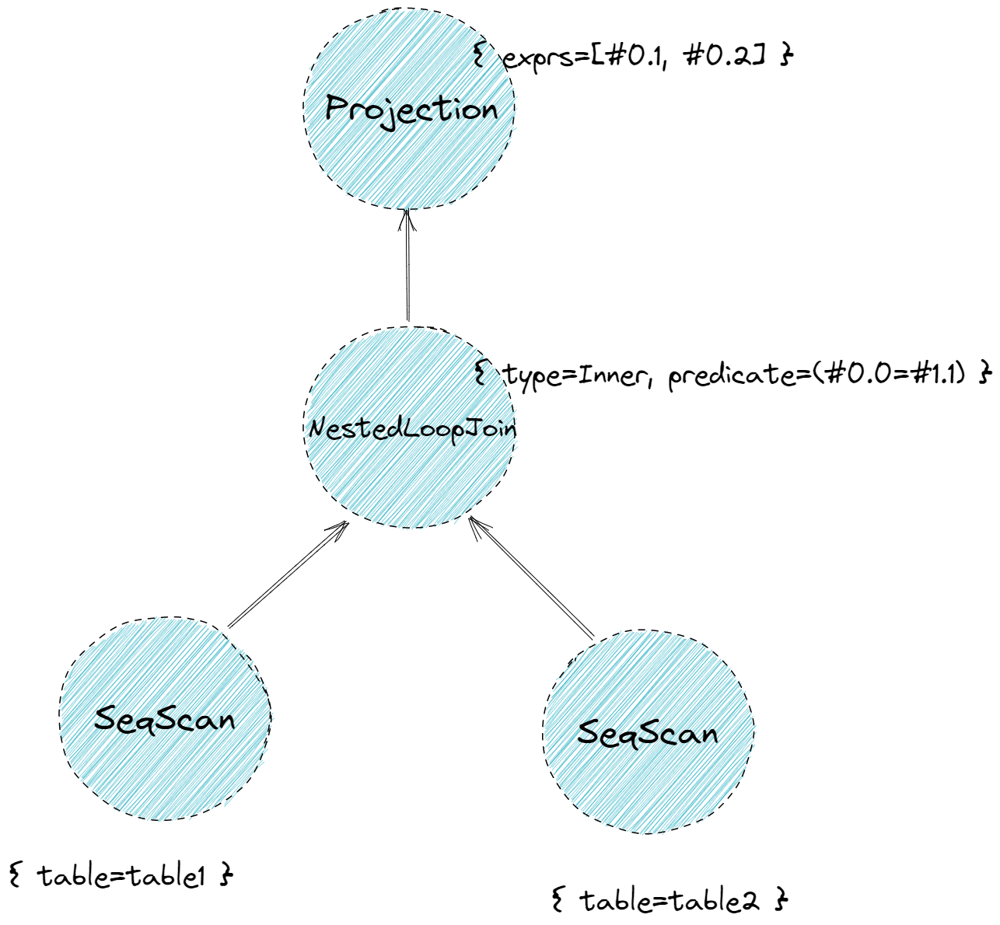
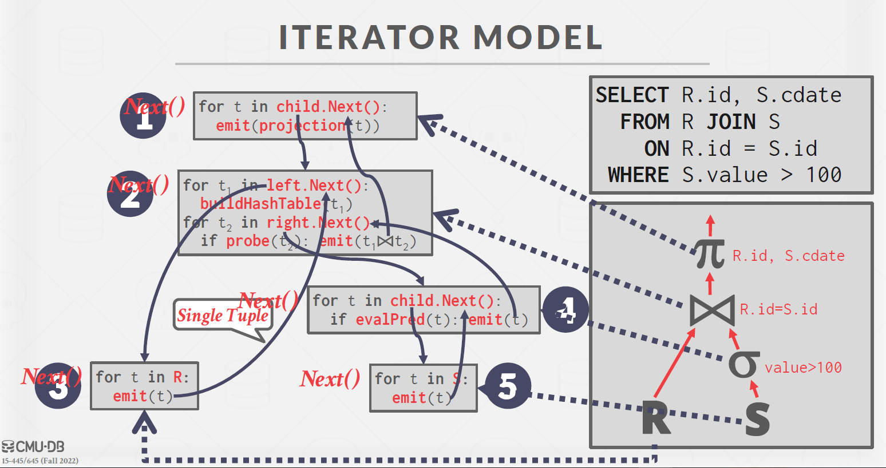
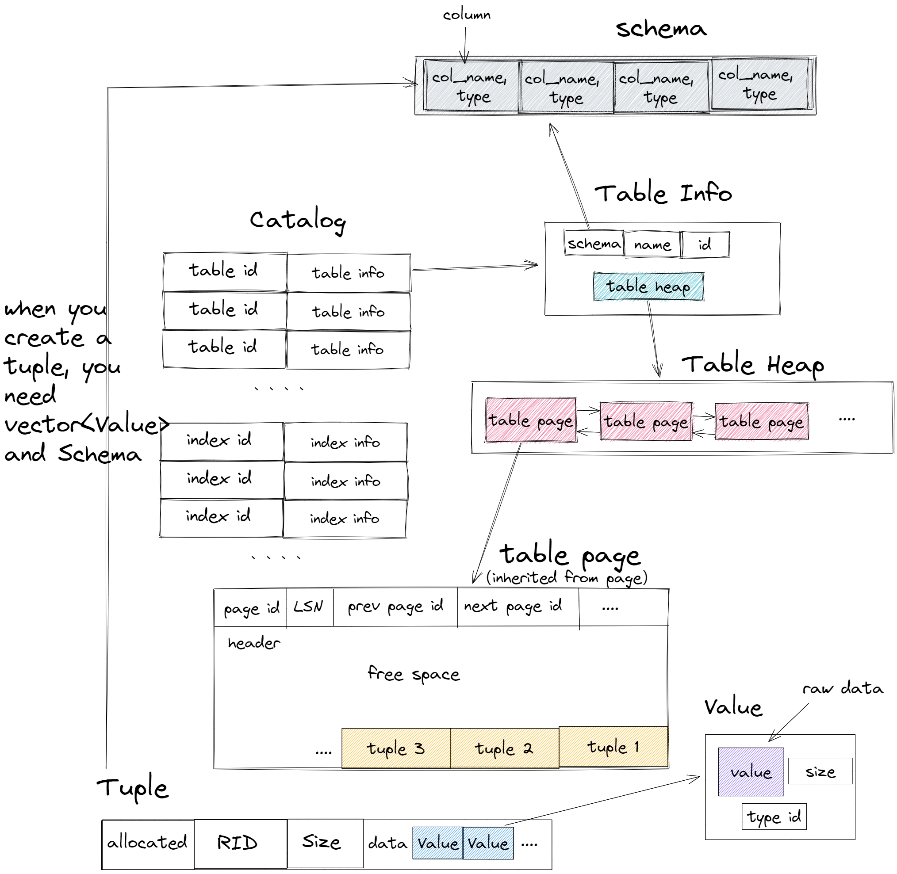
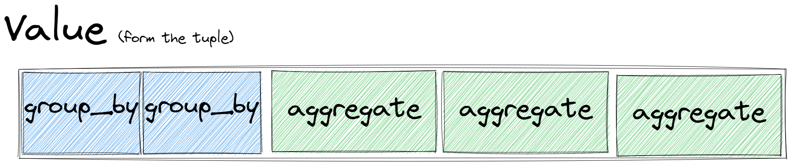
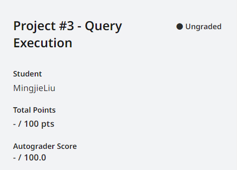

CMU15445-project3 Query Excution
本文最后更新于：5 小时前
Overview
在这次实验写完后，我们已经能使用bustub-shell完成执行 sql 语句了，还是挺有成就感的。同时，TA 为我们准备了浏览器上的bustub ，方便和我们写的对比调试。你也可以使用
explain来查看他的优化策略与执行步骤。
这次实验的主要难点在于读代码，理清 bustub 的执行引擎的数据流以及代码中的实现。搞懂了之后各个算子的实现就很简单了（相对 B+树）。

上图是 bustub 的整体架构。
Parser
sql 语句的解析就像其他编程语言一样，同样需要翻译成比较结构化的东西。Parser 阶段会生成一个抽象语法树(AST, Abstract Syntax Tree)。 这并不是数据库核心部分，bustub 直接使用了 PostgreSQL 的 parser 库 libpg_query。
Binder
得到 AST 后，需要将这些词语绑定到数据库实体上，这就是 Binder 的工作。例如有这样一条 sql：
1 | |
其中 SELECT 和 FROM 是关键字，x 和 table1 是标识符。我们可以使用 explain 来看看 binder 层（bustub-shell 未完成时也可以使用 explain）：
1 | |
可以看出，binder的作用就是对AST的各个节点绑定一个（物理）实体。
Planner
得到 Bustub AST 后，Planner 遍历这棵树，生成初步的查询计划。查询计划也是一棵树的形式。例如这条 sql：
1 | |
查看 explain：
1 | |
上面的解释其实是树型的，如下图：

查询计划规定了数据的流向。数据从树叶流向树根，自底向上地流动，在根节点输出结果。
Optimizer
生成查询计划后
由 Planner 得到初步的查询计划后，再将查询计划交给 Optimizer 进行修改优化，生成优化过后的最终查询计划。Optimizer 主要有两种实现方式：
- Rule-based.
- 通过自动重写查询来避免效率低的方法。例如我们在 Task 3 中将要实现的，将
Limit + Sort合并为TopN。 - 这种 Optimizer 不需要知道数据的具体内容，仅是根据预先定义好的规则修改
Plan Node。
- 通过自动重写查询来避免效率低的方法。例如我们在 Task 3 中将要实现的，将
- Cost-based.
- 用某种模型来预估执行计划的时间，这就需要存很多跟数据相关的数据
- 通过对不同模型的 cost 比较选出执行 cost 最小的。
- 这也会造成一些额外开销 （运行这个cost model）
Bustub 的 Optimizer 采用第一种实现方式。
一般来说，Planner 生成的是 Logical Plan Node，代表抽象的 Plan。Optimizer 则生成 Physical Plan Node，代表具体执行的 Plan。例如是 Join。在 Planner 生成的查询计划中，Join 就是 Join。在 Optimizer 生成的查询计划中，Join 会被优化成具体的 HashJoin 或 NestedIndexJoin 等等。在 Bustub 中，并不区分 Logical Plan Node 和 Physical Plan Node。Planner 会直接生成 Physical Plan Node。
Executor
在拿到 Optimizer 生成的具体的查询计划后，就可以生成真正执行查询计划的一系列算子了。算子也是我们在 Project 3 中需要实现的主要内容。生成算子的步骤很简单，遍历查询计划树，将树上的 PlanNode 替换成对应的 Executor。算子的执行模型也大致分为三种：
-
Iterator/Pipeline Model(volcano model)。每个算子都有 Init() 和 Next() 两个方法。Init() 对算子进行初始化工作。Next() 则是向下层算子请求下一条数据。当 Next() 返回 false 时，则代表下层算子已经没有剩余数据，迭代结束。火山模型一次调用只向下层算子请求一条数据，占用内存较小，但函数调用开销大。 
-
Materialization Model. 所有算子立即计算出所有结果并返回。和 Iterator Model 相反。这种模型的弊端显而易见，当数据量较大时，内存占用很高，但减少了函数调用的开销。比较适合查询数据量较小的 OLTP workloads。
-
Vectorized/Batch Model. 对上面两种模型的中和，一次调用返回一批数据。利于 SIMD 加速。目前比较先进的 OLAP 数据库采用这种模型。
Bustub 采用 Iterator Model。
Metadata
上面介绍了 sql语句执行过程，足以让我们对整个执行引擎有大体了解。但是我在做这个 lab 时候还是有很多困惑的地方。最后是迷迷糊糊的写完了才整理了下。大体上的信息包括在下图中：

（图片改自这篇博客）
Task #1 - Access Method Executors
SeqScan
实现比较简单，获取 table_iter 直接遍历即可。这里说说这个plan_->filter_predicate_， 他是一个AbstractExpressionRef，而一个AbstractExpression意思是一个 表达式 ，他里面最重要的两个函数是 Evaluate(const Tuple *tuple, const Schema &schema)和 EvaluateJoin(const Tuple *left_tuple, const Schema &left_schema, const Tuple *right_tuple, const Schema &right_schema)，主要就是用来做 filter 的。例如
1 | |
如果任何优化都没有，那么上述语句可以解析为两层：
- 从 table1 中选出所有的 tuple。
- 选出 x = 1的 tuple。相当于底下的 seqscan 结点会将所有 tuple 发到上一层，然后上一层再做一次 filter。但是我们通过谓词下推，可以在seqscan 时候就通过 filter_predicate_ 将需要的过滤出来，不需要的不用发给上一层。（当然，这个例子不太准确。在这个情况下本来就是一次搞定的，总之是在复杂的时候可以把谓词下推）。
这个 Evaluate 返回一个Value，实际上如果做filter应该返回 boolean，所以需要通过filter_predicate_->Evaluate(tuple, table_info_->schema_).GetAs<bool>()转化一下。
另外，seqscan 实际上不会用到 filter_predicate。后面遇到需要 predicate 的地方会再强调。
Insert & Delete
这两个算子是唯二的写算子（实际上后面的优化过程中需要实现一个 update算子）。
我们先看下这两个算子的行为：
1 | |
这两个算子他们会一直 next，然后返回一次，返回的是插入/删除 tuple 的个数（所生成的tuple）。有点像 pipeline breaker，但是由于他们一定是顶层算子，所以好像不叫 pipeline breaker。
个人感觉这个返回个数的设计有点不是很合理，它一定要将个数转化成一个tuple返回。大概是这样的操作。
1 | |
另外需要注意的就是这些 增加/删除 tuple 时，对应的索引项也需要增加/删除。
IndexScan
这个就简单了，在 Init() 时候保存 index_iter， next() 时直接调用再自增就可以。
Task #2 - Aggregation & Join Executors
Aggregation
aggregation 操作是一个 pipeline breaker。他会在 init 得到全部答案然后再 next 时一条一条返回。
SimpleAggregationHashTable 维护一张哈希表，键为 AggregateKey，值为 AggregateValue，均为 std::vector<Value>。key 代表 group by 的字段的数组，value 则是需要 aggregate 的字段的数组。在下层算子传来一个 tuple 时，将 tuple 的 group by 字段和 aggregate 字段分别提取出来，调用 InsertCombine() 将 group by 和 aggregate 的映射关系存入 SimpleAggregationHashTable。若当前 hashmap 中没有 group by 的记录，则创建初值；若已有记录，则按 aggregate 规则逐一更新所有的 aggregate 字段，例如取 max/min，求 sum 等等。例如下面这条 sql：
1 | |
group by（AggregateKey）为 {t.x, t.y}，aggregate（AggregateValue）为 {t.z, t.z, t.z}。aggregate 规则为 {min, max, sum}。
需要额外注意 count(column) 和 count(*) 的区别，以及对空值的处理。
在 Init() 中计算出整张 hashmap 后，在 Next() 中直接利用 hashmap iterator 将结果依次取出。这里的输出形式有点奇怪，需要这样的输出：

schema 已经在 GetOutputSchema() 中准备好了。
NestedLoopJoin
我的实现比较 tricky。我在 init 时候直接把下层算子（left_executor和right_executor）所有的tuple都得到了（相当于当作 pipeline breaker），保存在两张表中。再 next时候进行匹配。这里的 left-join 和 inner-join 是需要分开实现的，可以在网上查下left-join和inner-join的区别。
在这里判断左右两个 tuple 是否 match 就需要用到plan_->Predicate().EvaluateJoin()，同样要 GetAs<bool>()。
当我们得到一个 match 后，返回前记得保存上下文，例如，你可以保存 match 的 tuple 再左表中的下标和右表中的下标，这样下次调用 next 时候，就不用重新扫描一次。
NestedIndexJoin
在进行 equi-join 时，如果发现 JOIN ON 右边的字段上建了 index，则 Optimizer 会将 NestedLoopJoin 优化为 NestedIndexJoin。具体实现和 NestedLoopJoin 差不多，只是在尝试匹配右表 tuple 时，会拿 join key 去 B+Tree Index 里进行查询。如果查询到结果，就拿着查到的 RID 去右表获取 tuple 然后装配成结果输出。
Task #3 - Sort + Limit Executors and Top-N Optimization
sort
这个实验的 sort 无需进行外部排序，重载小于后就可以实现。就是比较的方式有点奇怪，可以类比以下写：
1 | |
limit
简单，limit 限制在 plan_->Getlimit()里面。
Top-N Optimization Rule
简单，优先队列重载小于（重载方式与 sort 相同），然后截取前 n 个。
Sort + Limit As TopN
这是 Project 3 里最后一个必做的小问，也是唯一一个 Optimizer ，将 Sort + Limit 优化为 TopN。先看看 Optimizer 是如何执行优化规则的：
1 | |
可以看到，让未经优化的原始 plan 树依次经历多条规则，来生成优化过的 plan。我们的任务就是新增一条规则。看看其他规则是怎么实现的，例如 NLJAsIndexJoin：
1 | |
可以看到，实际上就是对 plan tree 进行后序遍历，自底向上地适用规则，改写节点。遍历到某个节点时，通过 if 语句来判断当前节点的类型是否符合我们要优化的类型，若符合则进行优化。
大致了解如何对 plan 进行优化后，就可以开始写我们的优化规则了。需要特别注意的是，能优化为一个 TopN 算子的形式是，上层节点为 Limit，下层节点为 Sort，不能反过来。同样，我们对 plan tree 进行后续遍历，在遇到 Limit 时，判断其下层节点是否为 Sort，若为 Sort，则将这两个节点替换为一个 TopN。还是比较好实现的，只是代码看起来可能有点复杂。
Leaderboard Task
暂时还没写，有空了补补
AC!

Resources
- bustub on web
- 课程官网
- Github Repo
- Youtube课程视频 2022fall （如果对英文字幕有压力的话可以在 chrome 插件里下个中英文双字幕插件）
本博客所有文章除特别声明外，均采用 CC BY-SA 4.0 协议 ，转载请注明出处！